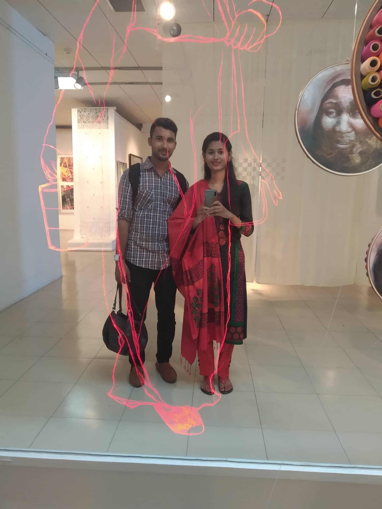
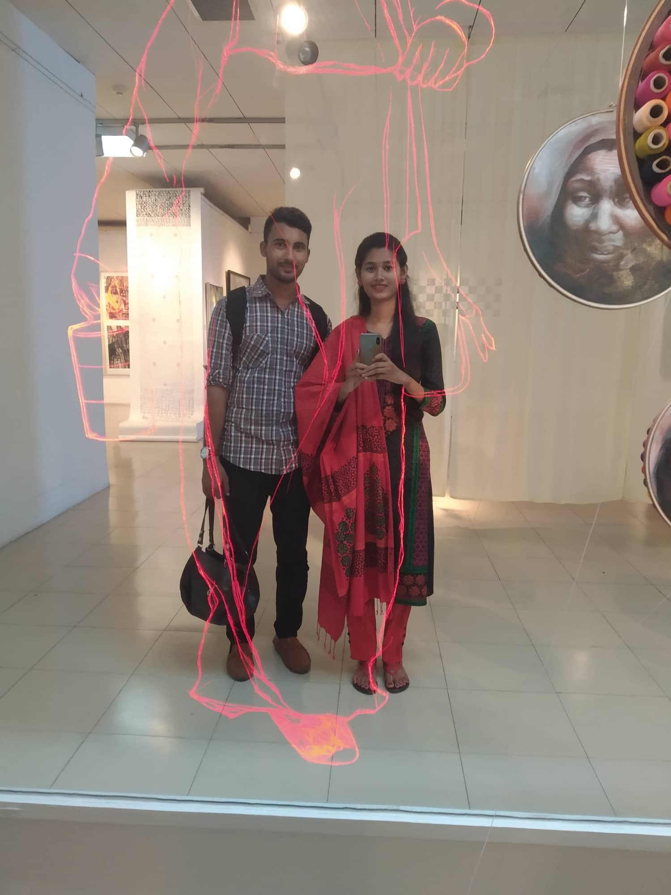

Hi!
I'm monoshi Brishty
My LoveTu hi toh jannat meri, Tu hi mera junoon (ur my heaven n ur my passion ) Tu hi to mannat meri, Tu hi rooh ka sukoon ( ur my prayer n ur my hearts fulfillment ) Tu hi aakhion ki thandak, tu hi dil ki hai dastak ( ur my eyes rest n ur the calling of my heart ) Aur kuch na janu mein, bas itna hi jaanu ( I dont know anything, just know only this ) Tujh mein rab dikhta hai (i see my god in u) Yaara mein kya karu ( oh dear what shall i do ) Tujh mein rab dikhta hai i see my god in u ) Yaara mein kya karu Sajdhe sar jukhta hai ( i bow my head infornt of u ) Yaara mein kya karu ( oh dear what shall i do )